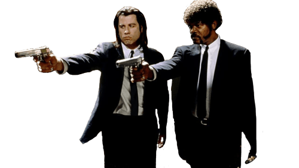

Pulp Fiction
Pulp Fiction is a critically acclaimed neo-noir crime film directed by Quentin Tarantino. Known for its unconventional narrative structure and stylized violence, the film presents a series of interconnected stories set in Los Angeles. The film follows a diverse cast of characters, including a hitman, a boxer, a diner waitress, and a criminal couple. Their lives intertwine in unexpected ways, leading to a series of humorous, suspenseful, and often shocking events. Tarantino's signature style, featuring witty dialogue, nonlinear storytelling, and graphic violence, is on full display in this iconic film.
